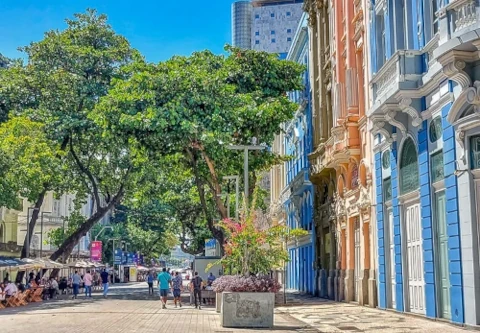
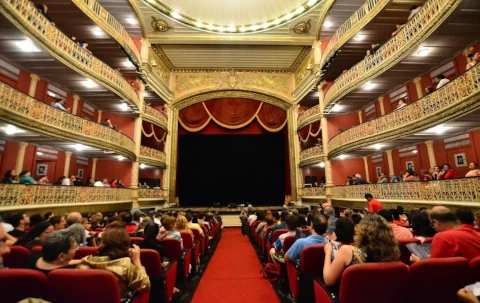

As a historical city, Recife has many historical places to explore and deal businesses. Its streets and landscapes create a unique scenario to invest in services and commerce.
Historical but not Old
Recife counts with the biggest urban technological park of Brazil, named Porto Digital, harboring more than 350 companies and 17 thousands of workers and entrepeneurs. As it have been said: The future of Recife is its past. The oldest part of city, the heart, it is also its engine.
Sao Jose Marketplace

Old Recife SquareRecife Commerce PalaceRecife Handcraft CenterRecife Center Bookstore

Saint Elizabeth Theater